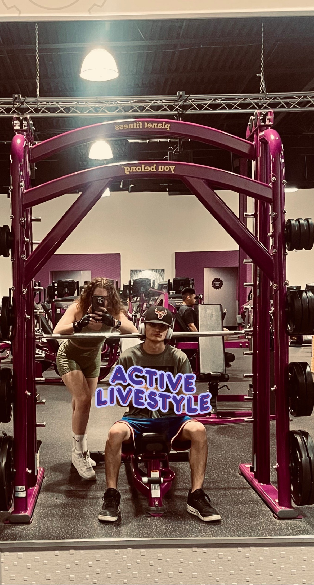

Working Out
I got hooked on working out when my friend brought me running one day at Planet Fitness. Now I am a little strange and enjoy running for some reason. However, I was never one to lift due to back problems. But I was tired of not being able to do basic things like carrying in groceries.
So I started lifting. It makes me happy to be able to lift more than my weight now. I can comfortably lift my friends who used to be worried that my backpack was too heavy. It is empowering to feel like you can protect yourself, especially as a 5’3” woman.
